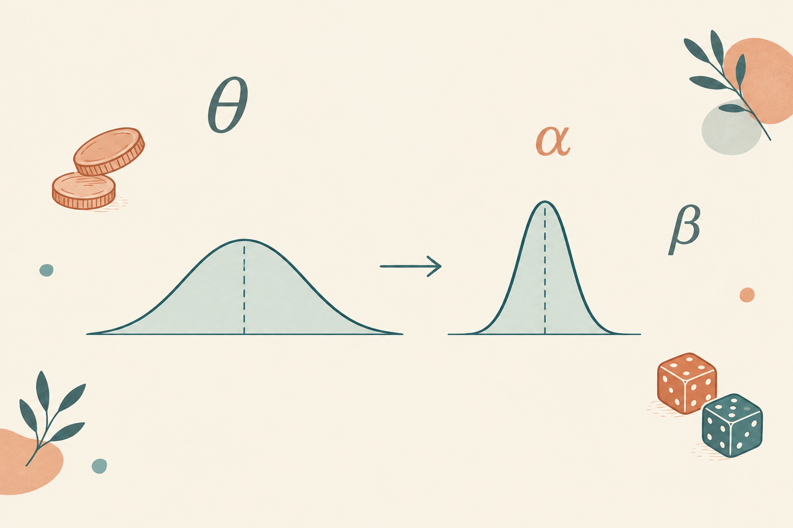

21 שיעורים + 3 משימות
קורס מודלים בייסיאניים בפייתון (PyMC), מוסבר שיעור אחר שיעור בעברית פשוטה: כל מושג מההתחלה, עם קוד מלא להעתקה, פלט צפוי, תרגיל ובדיקת הבנה. נבנה על חומרי הקורס של אלירן שר, אוניברסיטת אריאל.
משתנה מקרי (Random Variable) - מספר שהערך שלו טרם ידוע, למשל ממוצע חבטות של שחקן חדש.
התפלגות הסתברות (Probability Distribution) - תיאור של כל הערכים האפשריים וכמה כל אחד סביר.
פרמטר (Parameter) - מספר שמאפיין את התהליך הנחקר; בגישה הבייסיאנית הוא עצמו משתנה מקרי.
הסתברות מותנית (Conditional Probability) - P(A | B) - ההסתברות ל-A בהינתן ש-B ידוע.
אפריורי (Prior) - האמונה על הפרמטר לפני הנתונים.
נראות (Likelihood) - כמה הנתונים סבירים בהינתן ערך מסוים של הפרמטר.
פוסטריורי (Posterior) - האמונה המעודכנת אחרי הנתונים - התוצר של נוסחת בייס.
צמוד (Conjugate) - אפריורי שהפוסטריורי שלו נשאר באותה משפחה, כמו בטא עם נראות בינומית.
MCMC - משפחת אלגוריתמים שדוגמים מהפוסטריורי כשאי אפשר לחשב אותו ישירות.
HDI - רווח ה-HDI: הרווח הצר ביותר שמכיל אחוז נתון מההסתברות הפוסטריורית.
קרנל (Kernel) - פונקציה שמודדת קרבה בין נקודות ומגדירה אילו צורות פונקציה סבירות ב-GP.
תהליך גאוסי (GP) - התפלגות על פונקציות, לקשרים לא לינאריים ולא ידועים מראש.
כיווץ (Shrinkage) - במודל היררכי: משיכה של אומדני הפרטים לעבר הממוצע הכללי.
ESS - גודל מדגם אפקטיבי: כמה דגימות בלתי תלויות בפועל יש לנו מהשרשרת.
אופטימיזציה בייסיאנית - מציאת מקסימום של פונקציה יקרה עם GP ובחירה חכמה של הנקודה הבאה.
Thompson sampling - אסטרטגיית בחירה בבנדיטים: דוגמים מהפוסטריורי של כל זרוע ובוחרים את הגבוהה.
האתר נבנה על בסיס חומרי הקורס "מודלים בייסיאניים" של אלירן שר מאוניברסיטת אריאל (הריפו בגיטהאב). ההסברים נכתבו מחדש בעברית לצורך לימוד נוח, בקרדיט מלא למקור.